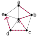

A Walking Tour of
\(\times\)-Homotopy
MSU-Billings Tien Chih
What are Graphs?
What are Graphs?
A graph \(G\) is pair of sets \((V, E)\). Where \(V\) is a set of vertices. And \(E\) is a set of edges between vertices.

\(V=\{1,2,3,4\}, E=\{12, 23, 34, 14\}\)
What is a walk?
What is a walk?
Given a graph \(G\) a walk is a sequence of vertices \(v_0,\ldots, v_n\), such that \(v_i, v_{i+1}\) are adjacent (connected with an edge).

The walk \(abcdea\).
What happens if you backtrack
?
What happens if you backtrack
?
Given a walk \(W=v_0,\ldots, \color{red}{v_{k}, x, v_{k}},\ldots v_n\) a prune of \(W\) is a walk: \(v_0,\ldots, \color{red}{v_{k}},\ldots v_n.\)

The walk \(ab\color{red}{cxc}d\mapsto ab\color{red}{c}d\).
Deforming Walks
Deforming Walks
A spider-move of a walk \(v_0,\ldots,v_{k-1}, \color{red}{x},v_{k+1}, \ldots v_n\) replaces \(\color{red}{x}\) with \(\color{red}{y}\): \(v_0,\ldots,v_{k-1}, \color{red}{y},v_{k+1}, \ldots v_n\) so long as \(v_{k-1}\sim y\sim v_{k+1}\).

The walk \(ab\color{red}{c}d\mapsto ab\color{red}{x}d\).
The Game
Two walks are equivalent
\(\equiv\) if:
- You can prune (anti-prune) from one walk to the other.
- You can spider-move between the walks.
- (The endpoints of the walk are fixed.)
Can I find a shorter equivalent walk to \(dghif\)?
- Delete (add) backtracks.
- Spider-Move.
- Fix endpoints.
\(dghif\equiv def\).
Can I find a shorter equivalent walk to \(dabcf\)?
- Delete (add) backtracks.
- Spider-Move.
- Fix endpoints.

\(\color{blue}{abx}*\color{red}{xcde}=\color{purple}{abxcde}.\)
Given walks \(W=v_0,\ldots, \color{red}{v_n}, U=\color{red}{v_n}, w_1, \ldots, w_m\), the concactenation of \(W\) and \(U\) is \(W*U=v_0,\ldots,\color{red}{v_n},\ldots, w_m.\)
\(\color{blue}{abx}*\color{red}{xcde}=\color{purple}{abxcde}.\)
Can you find a shorter walk equivalent to \(W=abcdea\)?
\(abcdea\equiv abxa.\)
Can you find a shortest walk equivalent to \(W^2=abcdeabcdea\)?
\[W^2\equiv \color{red}{abcdea}*\color{blue}{abcdea}\]
\[W^2\equiv \color{red}{abcdea}*\color{blue}{abcdea}\equiv \color{red}{abxa}*\color{blue}{abcdea}\]

\[W^2\equiv\color{red}{abxa}*\color{blue}{abcdea}\equiv \color{red}{abxa}*\color{blue}{axea}\]
\[W^2\equiv \color{red}{ab\underline{xa}}\color{blue}{\underline{x}ea}\equiv \color{red}{ab\underline{x}}\color{blue}{ea}\]

\[W^2\equiv \color{red}{ab\underline{x}}\color{blue}{ea}\equiv \color{red}{ab\underline{a}}\color{blue}{ea}\]

\[W^2\equiv \color{red}{\underline{aba}}\color{blue}{ea}\equiv \color{red}{\underline{a}}\color{blue}{ea}\]

\[W^2\equiv \color{red}{\underline{a}}\color{blue}{\underline{ea}}\equiv \underline{a}!\]
Homotopy
To a topologist, a coffee cup and a donut are the same thing.
-Common Math Joke.
Geometric Figures
\(f, g\) are homotopic, if there is
\(\varphi:X\times [0,1]\to Y\)
where \(\varphi|_{(-,0)}=f, \varphi|_{(-,1)}=g\).
Graphs
\(f, g\) are \(\times\)-homotopic, if there is
\(\varphi:G\times I_n\to H\)
where \(\varphi|_{(-,0)}=f, \varphi|_{(-,n)}=g\).


homotopic

\(\times\)-homotopic

Tien Chih
Graph Theorist

Laura Scull
Homotopy Theorist
Project: Take homotopy concepts and find their
\(\times\)-homotopy analogues if any.
What we worked through today was the fundamental group(oid)!
Current Progress
- A Homotopy Category for Graphs, Tien Chih & Laura Scull, Journal of Algebraic Combinatorics (2020).
- Fundamental Groupoids for Graphs, Tien Chih & Laura Scull, CGASA (accepted), (2021).
- Homotopy Covers for Graphs, Tien Chih & Laura Scull, submitted, (2021).
Student work
Funded by CURM and the NSF!
Future Directions
\(\ \ \ \ \ \ \ \ \)For Students
- Continue enumerating and identifying properties of spider webs.
- Further compare the symmetries of \(G\) and its pleat.
- Compute covers, universal covers, fundamental group(oids) etc. for families of graphs.
- Write code automating any of the above.
Thank you!